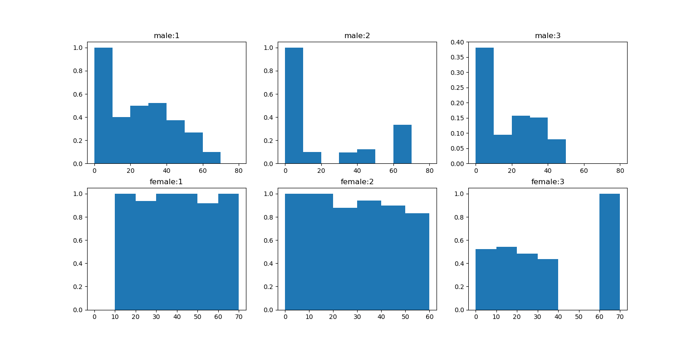

Sun 10 Jun 2018¶
- Working Directory: Research
- Updated Script: script01.py, script02.py
Exploration¶
Note: Exploration is in script01.py. Just run it in your shell.
For each gender, each pclass, we plot the survival ratio for people of different age range, namely 0~10, 10~20, 20~30, 30~40, 40~50, 50~60, 60~70, 70~80. The plot is shown below:
The first row shows survival distribution across different age range of males from different pclass. The second row shows woman’s.
As can be seen, woman from first and middle class have high survive ratio that near 1.
We may use this survive distribution information to guess other people’s destiny.
Experiment¶
Note: Experiment is in script02.py. Just run it under your shell.
In training stage, we compute the survival distribution of different sexes, different pclasses, across different age range, as mentioned in Exploration step. And then use this ratio as probability, we guess others’ destinies in predicting stage.
The cross validation result is:
- correct rate: 73%
May be a little low.
Future Work¶
We need to try more general model with great predictive power.